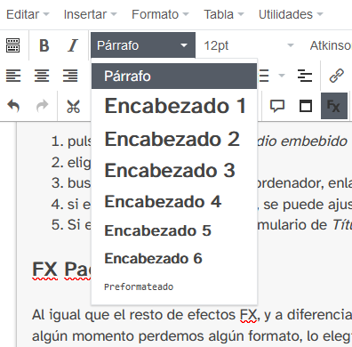

Diccionario
Este bloque está creado con un Contenido DUA sin título. Esto, además del título, hace que no se muestre el marco de color alrededor del bloque cuando se abre.
La palabra Diccionario aparece debido a que se ha indicado en el Texto del Botón que aparece a continuación.
En el contenido del bloque, dentro del editor, se ha insertado un FX acordeón para que el significado de cada palabra quede oculto hasta que se pulse su definición. Observarás que, este y otros efectos FX, serán utilizado en otros contenidos además de esta explicación.
Para la creación del diccionario, se ha utilizado el Diccionario de Español del Proyecto REA de la Junta de Andalucía. Sólo hay que buscar la palabra, pulsar en Insertar HTML general (quedará copiado) y pegarlo en la zona HTML del editor del Contenido DUA. Puedes seguir el manual pulsando aquí.
Bloque 1
Este Contenido DUA está dividido en dos partes: principal y de lectura facilitada (LF). Ésta última, destinada para alumnado con déficit de comprensión lectora (puedes ver lo relativo a la lectura facilitada recogido en el manual desde aquí y también puedes mirar aquí para aplicarlo).
Principal
En este bloque se ha creado un contenido básico de texto con palabras destacadas y una imagen alineada.
Para que aparezcan el título, el icono y el color que lo bordea, se ha especificado lo siguiente:
- Título. El apropiado para el contenido
- Icono. Se puede elegir al pulsar el pequeño icono
- Color. Se elige entre Implicación, Comprensión y Expresión para indicar el tipo de contenido. El color va asociado a la opción elegida.
Las palabras destacadas, en negrita y subrayadas, muestran un texto al pasarles el ratón por encima. Son Bocadillos y se usan mucho en los REA como ampliación del significado del contenido o de ciertas palabras. Normalmente, haciendo referencia a las indicadas en el Diccionario por lo que sólo tendremos que copiar y pegar el mismo código HTML utilizado allí.
El bocadillo es de tipo Definición al que se le ha puesto un título, el término asociado y el código HTML extraído del diccionario.
Finalmente, la imagen se ha insertado al comienzo del texto, se le ha aplicado un tamaño y se ha alineado a la izquierda.
¡Listo!
Lectura facilitada (LF)
Para crear este bloque, se ha pulsado en la pestaña Lectura facilitada. Observa que el editor es el mismo pero, cuando guardemos el resultado, se mostrará el icono pulsable que servirá para mostrarlo.
En este espacio se espera mostrar el mismo contenido que en Principal pero con un lenguaje más fácil, corto, preciso y ayudado de iconos (pictogramas de ARASAAC).
Para la realización de este bloque, otros REAs utilizan tablas de dos columnas. En este caso, tal y como se especifica en el manual, se ha escogido el efecto FX Línea de tiempo que permite ocultar la traducción al español de la palabra/frase en inglés.
Bloque 2
Este bloque es más simple que el anterior, sólo tiene un texto con varios párrafos y no lleva LF.
Sí contiene efecto FX acordeón y enlaces a recursos en el Banco de Recursos EDEA.
Por cierto, los enlaces están rotos. Suele ocurrir si no se escoge correctamente el enlace o se apunta a páginas que pueden no ser definitivas o sean cambiantes.
Indagando un poco por Internet, creo que el/la editor/a quiso apuntar aquí.
Consejo: Usa la opción Destino - Ventana nueva para no salir del REA y obligarnos a "volver atrás" en el navegador.
Bloque 3
Completamos esta página con el bloque 3 en el que se ha incrustado un vídeo, se ha introducido otro efecto FX de tipo paginado y un párrafo con la imagen de Rétor alineada a la izquierda.
A diferencia de como hemos visto hasta ahora, la información se ha distribuido en 2 secciones dentro del DUA.
Sección 1: El vídeo
Para incrustar un elemento (vídeo, audio, documento, ...) se debe seguir estas indicaciones del manual. Para insertar un vídeo, realiza lo siguiente:
- pulsas en Insertar/editar medio embebido
- eliges el tipo
- buscar la fuente (archivo en ordenador, enlace en Internet, ...), automáticamente se deberá ajustar al tamaño
- si el tamaño no es adecuado, se puede ajustar al aconsejado por el Proyecto REA (560x315 px)
- Si es necesario, rellena el formulario de Título y reconocimiento para mostrar la autoría y licencia del vídeo
Sección 2: FX Paginación
Al igual que el resto de efectos FX, y a diferencia de la línea de tiempo, se completa rellenando dos formatos Encabezado 2 (fondo negro) y Párrafo (zona normal de escritura). Si en algún momento perdemos algún formato, podremos elegirlo en la parte superior del editor.
En el contenido de este efecto, sólo se ha insertado un párrafo y una imagen alineada a la izquierda con un tamaño máximo de 125 x 125.
Si la imagen quedara muy pegada al texto, se puede modificar el espacio horizontal y vertical en el apartado Avanzado del cuadro de inserción de imagen. Con 10 píxeles en cada caso es más que suficiente.
Final sección 2: Rétor y párrafo (yo hubiera creado una tercera sección)
Finalmente, encontramos un párrafo junto a una imagen de Rétor igual que en ocasiones anteriores.
En este caso, podríamos haber continuado con la idea de las secciones y separarla. Además, nos podría servir como botón de retroalimentación o ampliación del contenido.
Esto se consigue pulsando en + en la parte superior del iDevice, escribir un texto en Texto del botón y elegir un personaje. Escribe un contenido y pulsa guardar. El texto del botón quedará junto a la imagen del personaje y, al pulsar, mostrará el contenido escrito. ¡Queda muy bien!


{kind=link}